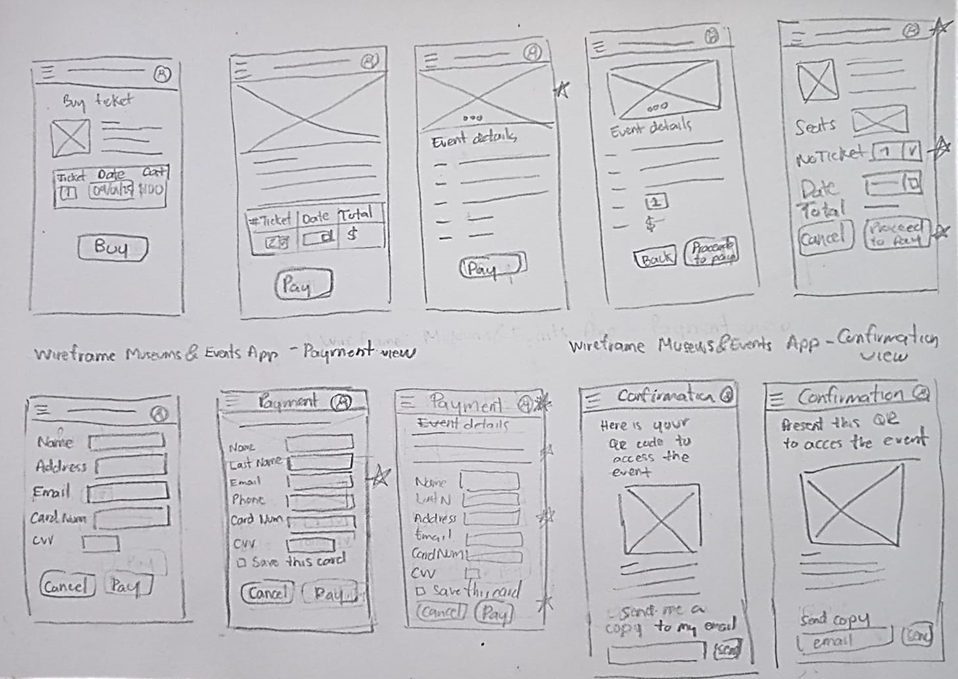
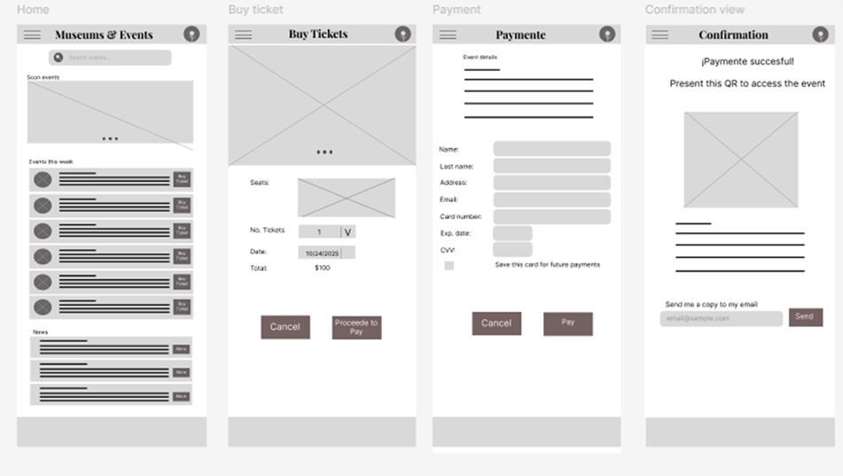
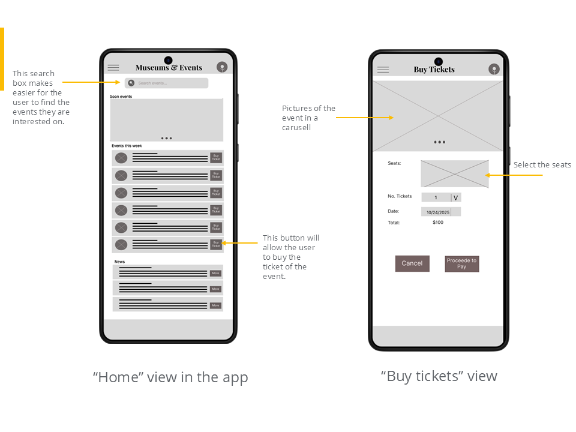

App with information of museums, events and art expositions; the target customer is people interested in art events.
Students of the carrer Art history and people interested in art events miss some events because the musems don’t send reminders and don’t make to much publicity to their events.
Our Museums & events app will let users find events, receive notifications of coming events and buy tickets.
UX/UI Generalist
Research, wireframes, UI, prototype, visual design
Figma
User research: Summary
I realized a primary reasearch, making interviews to people that study Arts or interested in art. With the results we created two personas.
After the research, my assumptions changed because I was not taking in count people with visual issues; knowing this will helps me to understand that the accesibilty should be added in all projects.
Ana is an Art History student who needs an easy-to-use app to find museum events and receive notifications because she doesn’t want to miss the ones she’s interested in, especially the free ones.
This picture shows the draft of the “Buy ticket” and “Payment views”, drafting several posibilities and adding a star to the elements we should keep for the digital wireframe.
Based on the Paper wireframes, I created the Digital wireframes usign Figma.
 Este proyecto reforzó la importancia de entender las necesidades del usuario antes de diseñar, así como mantener un balance entre funcionalidad y estética.